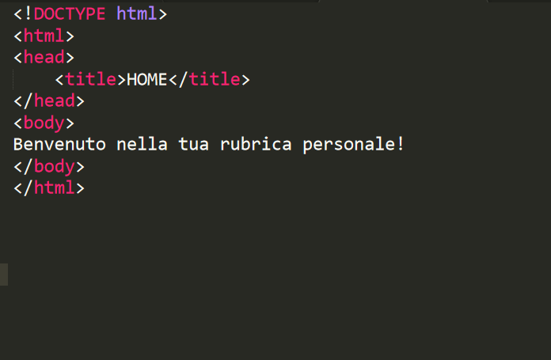
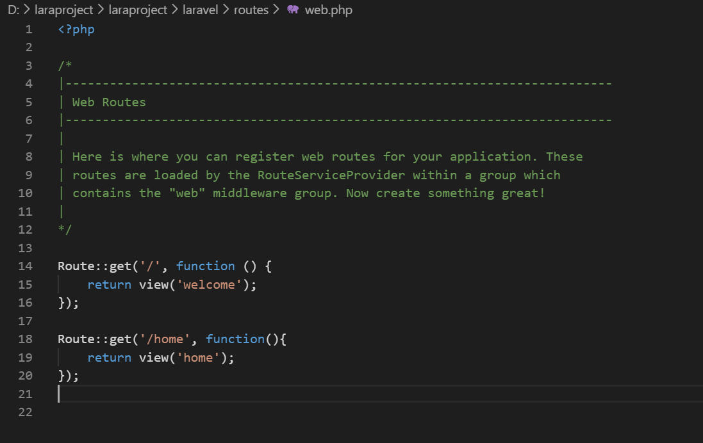

In quest prima parte vedremo come creare un routing per una richiesta, e come fare visualizzare una semplice pagina Html a Laravel.
Anzitutto, assicuriamoci di avere avviato la macchina virtuale, dopodichè apriamo con un editor di testo il file .\routes\web.php. Sostituiamo il file con il seguente codice:
Route::get('/', function () {
return 'Il mio primo routing';
});
Route::get('/', function () {
return 'Il mio primo routing';
});
Route::get('/seconda/', function () {
return 'il secondo routing';
});
"<h1>primo routing formattato con tag html</h1>"
Tutto molto bello, ma la domanda a questo punto sorge spontanea: Ma se voglio creare un indirizzamento ad una pagina html intera, devo scrivere tutto il codice nel return della funzione? Ovviamente no! Qui introduciamo la famosa architettura MVC di cui parlavamo prima, in realta al momento introduciamo solo la "V", perchè i modelli ed i controller li vedremo nei paragrafi successivi. Se la nostra pagina web non ha bisogno di eseguire una qualche logica a livello di server, possiamo indirizzarla direttamente a una vista. Se ci fate caso, nel file web.php originale, avevamo questo codice:
Route::get('/', function () {
return view('welcome');
});
Laravel si occupa per noi di indirizzare e renderizzare correttamente i file html, che vengono chiamati Views. Stiamo dicendo al nostro server: "Hey, ogni volta che ti arriva in ingresso una richiesta con Uri /, tu devi restituire come output il file php che trovi nella cartella \laravel\resources\views e che si chiama welcome.blade.php".
A questo punto i più attenti si chiederanno: come mai il file ha quella strana estensione? Blade è un potente e semplice motore di template fornito da Laravel che rende la costruzione delle view molto duttile e semplice.
Visto che ne abbiamo parlato, iniziamo a sporcarci le mani con Blade e proviamo a costruire il nostro primo routing.
Nella stessa cartella in cui abbiamo visto trovarsi la vista "welcome.blade.php", creiamo un semplice file di testo, e chiamiamolo "home.blade.php".

Una volta fatto, modifichiamo il codice del file web.php per inserire il nostro routing.

Se ora visitiamo l'url laravel.local/home dovremmo vedere la nostra pagina web.
Abbiamo eseguito e compreso i primi passi del routing delle richieste. Nel prossimo tutorial, impareremo a utilizzare i controller, installeremo un semplicissimo database molto facile da configurare per iniziare a sviluppare in serenità la nostra applicazione, e creeremo il nostro primo modello.
Se vuoi saperne di più sul routing, ti invito a consultare il capitolo dedicato nella guida ufficiale Laravel (in inglese). Altrimenti Torna alla home.